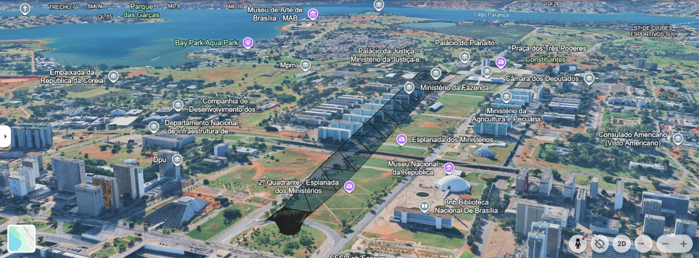
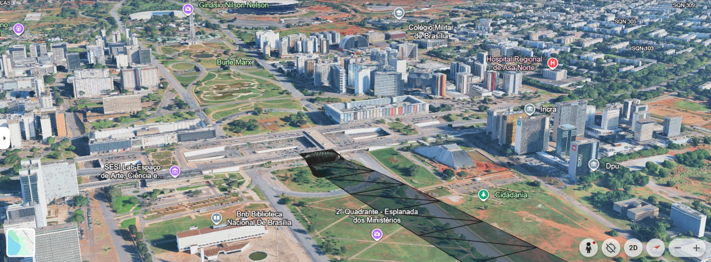
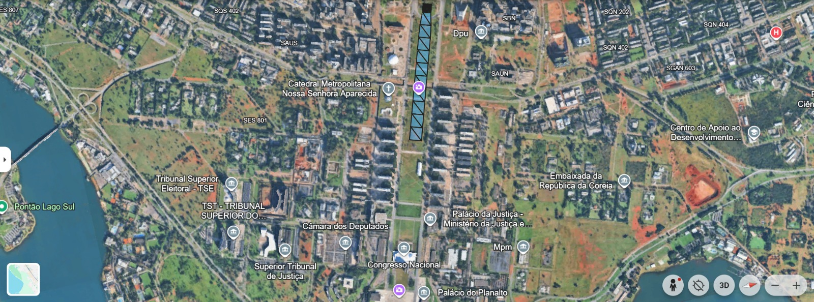
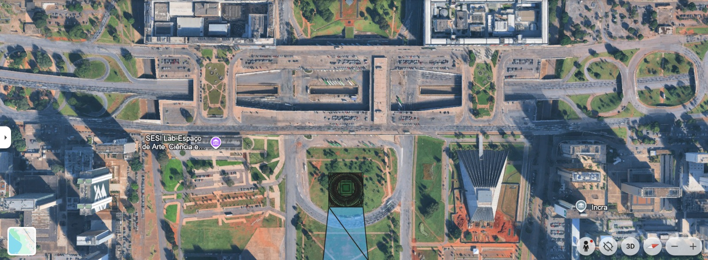

A análise das condições meteorológicas é um fator determinante para a viabilidade operacional de sistemas eVTOL. Os dados apresentados nesta seção foram extraídos de registros históricos do aeródromo de Brasília e caracterizam os padrões de vento e as condições de voo ao longo do ano, subsidiando o dimensionamento do vertiporto e a avaliação da cobertura temporal das operações.
Rosas dos Ventos Mensais
Distribuição direcional e de intensidade do vento para cada mês do ano. As faixas de velocidade seguem a classificação: 0–6 kt, 6–10 kt, 10–14 kt e 14–20 kt.
Rosa dos Ventos Anual
Síntese anual da distribuição direcional do vento, evidenciando a predominância do quadrante leste, com pico de 35% na direção E. Cada anel representa 5% de frequência.
Escala: cada anel = 5%
Condições VMC / IMC por Mês
Distribuição mensal das condições de voo Visual (VMC) e por Instrumentos (IMC). O período de seca (junho–agosto) apresenta frequência de IMC inferior a 2%, enquanto meses chuvosos atingem até 12%.
VMC vs IMC — Distribuição Mensal (%)
Condições VMC / IMC por Hora do Dia
Variação horária das condições de voo ao longo do dia. O período entre 9h e 13h concentra os maiores índices de IMC (até 12,7%), associados à formação de nuvens convectivas no período da manhã em Brasília.
VMC vs IMC — Distribuição Horária (%)
Localização do Sítio — Esplanada dos Ministérios
Visualizações do local de estudo para implantação do vertiporto, na região da Esplanada dos Ministérios em Brasília. As imagens apresentam vistas 3D e aéreas obtidas via Google Earth, ilustrando o contexto urbano, as rotas de aproximação e a geometria do sítio proposto.



